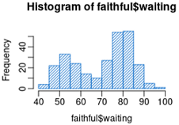
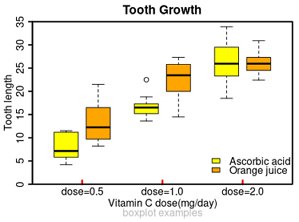
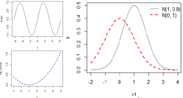
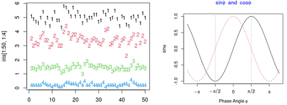

R绘图 基本图形
要点: 高级画图命令，如条形图、饼图、扇形图、直方图、核密度图、箱线图、小提琴图和点图的用法。[R In Action Chapter6]
R作图的目的：更好地理解数据，并能够与他人沟通这些理解方式。
格式：barplot(height) #height是一个向量或一个矩阵，表示条形图的高度；选项horiz=TRUE水平显示；
我们使用vcd包中的Arthritis数据框(一项探索类风湿性关节炎新疗法研究的结果)为例。
#install.packages("vcd")
library("vcd")
#探索数据
str(Arthritis)
head(Arthritis)
counts=table(Arthritis$Improved);counts
#None Some Marked
#42 14 28
#无效、部分改善、改善的人数
#简单条形图
barplot(counts, main="Simple bar plot",
xlab="Improvement",ylab="Frequency")
#水平条形图
barplot(counts, main="Horizontal bar plot",
horiz=T,
ylab="Improvement",xlab="Frequency") #注意手动交换x和y轴label

#对于因子，可以直接plot()绘制，无需table()将其表格化
plot(Arthritis$Improved, main="Simple bar plot",
xlab="Improvement",ylab="Frequency")
plot(Arthritis$Improved, main="Horizontal bar plot",
horiz=T,
ylab="Improvement",xlab="Frequency")
#绘图结果同上图。
如果height是一个矩阵而不是一个向量，则绘图结果就是堆砌条形图和分组条形图。
若beside=FALSE（默认值），则矩阵中的每一列都将生成图中的一个条形，各列中的值将给出堆砌的“子条”的高度。
若beside=TRUE，则矩阵中的每一列都表示一个分组，各列中的值将并列而不是堆砌。
#治疗类型和改善结果的列联表
library("vcd")
counts=table(Arthritis$Improved,Arthritis$Treatment)
counts
#Placebo Treated
#None 29 13
#Some 7 7
#Marked 7 21
#堆砌条形图
barplot(counts, main="Stacked bar plot",
xlab="Treatment",ylab='Frequency',
col=c("red",'yellow','green'),
legend=rownames(counts))
#分组条形图
barplot(counts, main="Stacked bar plot",
xlab="Treatment",ylab='Frequency',
col=c("red",'yellow','green'),
legend=rownames(counts),
beside=T)

请尝试重新布局，避免图形和图例重叠。
怎么让barplot的标签倾斜45度？难点是怎么定标签坐标？ 1.barplot()返回值是条形的位置，2.使用text()自定义坐标轴文本
border = NA, bar图不要边框
space=0, bar之间不要间距
#合并数据
states=data.frame(state.region, state.x77)
#str(states) #50 obs. of 9 variables
#head(states)
#按照by分组求每组的均值
means=aggregate(states$Illiteracy,by=list(state.region),FUN=mean)
#对数据框排序，从小到大
means=means[order(means$x),];means
# Group.1 x
#3 North Central 0.700000
#1 Northeast 1.000000
#4 West 1.023077
#2 South 1.737500
par(mar=c(7,4,4,2)) #增加底部空间
posX=barplot(means$x,
#cex.names=0.6,#字号和默认的比值
#main="Barplot Title",
#las=2,#las=0和轴平行，2和轴崔志
#names.arg = means$Group.1,#names.arg展示在每个bar底部
density = c(5,10), #阴影密度
col=c('black',"red"), #阴影颜色 rainbow(4)
angle = 15+20*1:4) #每个阴影的角度
title("Mean Illiteracy Rate") #添加标题
text(x=posX,y=-0.1, #文字坐标
srt = 30, #文字倾斜30度
adj = 1, #对齐点0-1之间，0左下,1右上,0.5居中,outside [0, 1] will also work
xpd = TRUE, #允许显示到图形外部
labels = means$Group.1)

使用ggplot2中的barplot2()函数创建叠加有置信区间的均值条形图: barplot2: Enhanced Bar Plots.html
推荐: 更优美的
6. barplot 百分数堆叠条形图(原生+ggplot2)
library(vcd)
attach(Arthritis)
counts=table(Treatment, Improved);counts;
# Improved
#Treatment None Some Marked
#Placebo 29 7 7
#Treated 13 7 21
# Top
spine(counts,main="Spine Example" ) #归一化后，没法加图例？
spine(Improved~Treatment) #Y~X 同上
c2=t(counts);barplot(c2,legend.text = row.names(c2))
# Bottom
spine(Treatment~Improved) #Y~X
barplot(counts, legend.text=row.names(counts))
detach(Arthritis)

pei(x, labels); #x是非负向量，表示每个扇形的面积，而labels是标签字符型向量。
#画饼图
draw=function(){
par(mfrow=c(2,2))
slices=c(10,12.4,16,8,2)
lbls=c("US","UK","Australia","Germany","France")
#1 简单饼图
pie(slices, labels=lbls, main="Simple Pie Chart")
#2 为标签加上百分数，并自定义颜色
pct=round(slices/sum(slices)*100)
lbls2=paste(lbls," ",pct,"%",sep="");lbls2
pie(slices, labels=lbls2,col=rainbow(length(lbls2)),
main="Pie Chart with Percentage")
#3 比较鸡肋的3D图，更分散注意力
#install.packages("plotrix")
library(plotrix) #画3D饼图
pie3D(slices, labels=lbls,labelcex=1,#标签缩放倍数
explode=0.2, #饼图裂缝大小
main="3D Pie Chart")
#4 从表格创建饼图
mytable=table(state.region);mytable
lbls3=paste0(names(mytable), "\n",unname(mytable));lbls3
pie(mytable,labels=lbls3,
main="Pie Chart from a Table\n(with sample sizes")
}
#par(mai=c(0,0,0.5,0));
par(mar=c(0,0,2,0));
draw()

如果你不熟悉多附图的组合，请参考这里。
扇形图没有柱状图直观，比如几乎无法比较US和Germany的大小。所以扇形图是受统计学家鄙视的。为了提高可比较性，有人创造了一种称为扇形图（fan plot）的饼图变种。
library(plotrix)
slices=c(10,12.4,16,8,2)
lbls=c("US","UK","Australia","Germany","France")
#图1
fan.plot(slices,labels=lbls, main="Fan Plot")
#图2 加上百分比，自定义颜色
pct=round(slices/sum(slices)*100)
lbls2=paste(lbls," ",pct,"%",sep="");lbls2
fan.plot(slices,labels=lbls2, main="Fan Plot",
borders=NULL,
col=RColorBrewer::brewer.pal(n = 5,name = "Set2"))

扇形图重要的是看角度，而不是半径或者面积。
直方图通过在X 轴上将值域分割为一定数量的组，在Y 轴上显示相应值的频数，展示了连续型变量的分布。
hist(x) #x是数值向量。参数freq=F则表示根据概率密度而不是频数绘制图形。参数breaks用于控制组的数量。在定义直方图中的单元时，默认将生成等距切分。
par(mfrow=c(2,2))
hist(mtcars$mpg) #1简单直方图
#2
hist(mtcars$mpg, breaks=12,#分12个bin
col="red",
xlab="Miles Per Gallon",
main="Colored histogram with 12 bins")
#3 轴须图是一个核密度估计
hist(mtcars$mpg, freq=F,#不用频数，用频率
breaks=12,col="red",
xlab="Miles Per Gallon",
main="Histogram, rug plot, density curve")
rug(jitter(mtcars$mpg)) #添加轴须图
lines(density(mtcars$mpg),col="blue",lwd=2)
#4 添加正态密度曲线和外框
x=mtcars$mpg
h=hist(x,breaks=12,col="red",
xlab="Miles Per Gallon",
main="Histogram with normal curve and box")
xfit=seq(min(x), max(x), length=40);xfit
yfit=dnorm(xfit,mean=mean(x),sd=sd(x))
yfit2=yfit*diff(h$mids[1:2])*length(x) #公式来自PeterDalgaard。不懂??
lines(xfit,yfit2,col="green",lwd=2)
box() #添加盒型
#rug(jitter(mtcars$mpg, amount=0.01)) #如果有重复值，使用jitter打散

还可以设置斜线阴影填充，density 控制阴影的密度，angle 设置斜线的角度。
hist(faithful$waiting,
col="dodgerblue3",
mgp=c(2,0.5,0), #设置xlab与x的距离
density=15,
angle=60)

用术语来说，核密度估计是用于估计随机变量概率密度函数的一种非参数方法。从总体上讲，核密度图不失为一种用来观察连续型变量分布的有效方法。
全新绘制密度图: plot(density(x)) #x是一个数值型向量。
向一幅图中添加密度曲线: lines(density(x))
par(mar=c(4,4,3,2) + 0.1)
par(mfrow=c(2,1))
d=density(mtcars$mpg)
#1
plot(d)
#2
plot(d,main="Kernel Density of Miles Per Gallon")
polygon(d,col="red",border="blue") #红色填充曲线下方区域，边界蓝色
rug(mtcars$mpg,col="brown") #添加轴须图

可能是由于普遍缺乏方便好用的软件，这种方法其实完全没有被充分利用。幸运的是，sm包漂亮地填补了这一缺口。
使用sm包中的sm.density.compare()函数可向图形叠加两组或更多的核密度图。使用格
式为：
sm.density.compare(x, factor) #其中x是数值型向量，factor是一个分组向量。
#install.packages("sm")
library(sm)
par(lwd=2) #线宽度 双倍
#创建分组因子：cyl转换为cyl.f的因子
cyl.f=factor(mtcars$cyl, levels = c(4,6,8),
labels=paste(c(4,6,8),"cylinder"))
#绘制密度图
sm.density.compare(mtcars$mpg, mtcars$cyl,
xlab="Miels Per Gallon")
title(main="MPG Distribution by Car Cylinders")
#通过鼠标单机添加图例
colfill=c(2:(1+length(levels(cyl.f)))); #创建颜色向量
colfill #[1] 2 3 4
legend(locator(1), levels(cyl.f),fill=colfill) #locator(1)表示通过鼠标点击确定位置

核密度图的叠加不失为一种在某个结果变量上跨组比较观测的强大方法。你可以看到不同组所含值的分布形状，以及不同组之间的重叠程度。
箱线图同样是一项用来可视化分布和组间差异的绝佳图形手段（并且更常用）。通过五数总括，即最小值、下四分位数（第25百分位数）、中位数（第50百分位数）、上四分位数（第75百分位数）以及最大值，描述了连续型变量的分布。
箱线图能够显示出可能为离群点（范围±1.5*IQR以外的值，IQR表示四分位距，即上四分位数与下四分位数的差值）的观测。
默认情况下，两条须的延伸极限不会超过盒型各端加1.5倍四分位距的范围。此范围以外的值将以点来表示。
tmp=c(mtcars$mpg,40,50) #添加离群值2个
boxplot(tmp, main="Box plot", ylab="Mile per Gallon")
#输出统计量
boxplot.stats(mtcars$mpg)
#$stats
#[1] 10.40 15.35 19.20 22.80 33.90
从统计量可见，在我们的车型样本中，每加仑汽油行驶英里数的中位数是19.2，50%的值都落在了15.3和22.8之间，最小值为10.4，最大值为33.9。

看标注过的上图，数据略微正偏（上侧的须较下侧的须更长）。
箱线图可以展示单个变量或分组变量。
boxplot(formula, data=dataframe) #公式为y~A，为类别型变量A的每个值并列地生成数值型变量y的箱线图
#公式y ~ A*B则将为类别型变量A和B所有水平的两两组合生成数值型变量y的箱线图。
参数varwidth=TRUE 将使箱线图的宽度与其样本大小的平方根成正比。
参数horizontal=TRUE可以反转坐标轴的方向
研究气缸数量对每加仑汽油行驶的英里数的影响。
par(lwd=2) #线加粗
par(mfrow=c(1,4))
#1
boxplot(mpg~cyl, data=mtcars, main="Car Mileage Data",
xlab="Number of Cylinders",
ylab="Miles per Gallon")
#2
boxplot(mpg~cyl, data=mtcars, main="varwidth=T",
varwidth=TRUE, #箱线图的宽度与各自的样本大小成正比
xlab="Number of Cylinders",
ylab="Miles per Gallon")
#3 ?warning
boxplot(mpg~cyl, data=mtcars, main="notch=T",
notch=TRUE, #带凹槽的
col="#A6D854",
xlab="Number of Cylinders",
ylab="Miles per Gallon")
#4 ?warning
boxplot(mpg~cyl, data=mtcars, main="notch=T,varwidth=T",
notch=TRUE, #带凹槽的
varwidth=T, #箱线图的宽度与各自的样本大小成正比
col="#A6D854",
xlab="Number of Cylinders",
ylab="Miles per Gallon")
table(mtcars$cyl)
#4 6 8
#11 7 14

含notch=T 的语句为什么都有warning? //todo
#创建气缸数量的因子
mtcars$cyl.f=factor(mtcars$cyl,levels=c(4,6,8),labels=c("4","6","8"))
#创建变速箱类型的因子
#[, 9] am Transmission (0 = automatic, 1 = manual)
mtcars$am.f=factor(mtcars$am,levels=c(0,1),labels=c("auto","standard"))
#
boxplot(mpg~am.f*cyl.f, data=mtcars,
varwidth=T,
col=c("gold","darkgreen"),
main="MPG Distribution by Auto Type",
xlab="Auto Type")

figX.不同变速箱类型和汽缸数量车型的箱线图
再一次清晰地显示出油耗随着缸数的下降而减少。对于四缸和六缸车型，标准变速箱
（standard）的油耗更高。但是对于八缸车型，油耗似乎没有差别。也可以从箱线图的宽度看出，四缸标准变速箱的车型和八缸自动变速箱的车型在数据集中最常见。
第二种画法，分别画每个x轴分类变量，subset取数据子集，使用 add=T 拼合图层，使用 at 控制每个box的x坐标，boxwex 控制每个box的宽度。
#2种维C的不同剂量对鸽子牙齿长度的影响，R 内置数据。
head(ToothGrowth)
table(ToothGrowth$supp)
# x轴分类方式1
boxplot(len~dose,#绘制变量len与dose的盒型图（前者为连续型变量，后者是分类变量）
data=ToothGrowth,#使用R语言内置数据集ToothGrowth
subset=supp=="VC",#采集ToothGrowth中supp为VC的数据，即此处只绘制VC数据
boxwex=0.3, #每个box的宽度
at=1:3-0.2,#at参数定义了图中盒子横坐标位置为0.8，1.8，2.8
col="yellow",
xaxt="n", #不显示x轴
xlim=c(0.5,3.5),ylim=c(0,35),
#mgp=c(1.5, 0.5, 0), #没作用 //todo ??
ann=F, #不要xlab, ylab, main
#main="Tooth Growth", #xlab="Vitamin C dose(mg/day)", ylab="Tooth length",
yaxt="n", #不显示y轴
yaxs="i") #设置y轴极值即边界(y轴的0紧邻x轴，不留空白，对比 plot(c(1,2))
# x轴分类方式2
boxplot(len~dose,
data=ToothGrowth,
subset=supp=="OJ",
add=TRUE, #叠加到上一个图中
boxwex=0.3,
at=1:3+0.2,
xaxt="n", #不显示x轴
yaxt="n", #不显示y轴
col="orange")
# 添加x轴
axis(side=1, at=1:3, labels = c('dose=0.5','dose=1.0','dose=2.0'),
lwd.ticks=3, #x轴刻度加粗
col.ticks = "red", #刻度线颜色
tcl=0.3, #刻度线长度，是一个比例，相对于字体大小。负值朝下，正值向上
mgp=c(1.5, 0.1, 0),
lwd=2)
mtext(text = "Vitamin C dose(mg/day)", side = 1, line = 1) #添加 xlab
# 添加y轴
axis(side=2, at=seq(0,35, 5), labels = seq(0,35, 5),
tcl=-0.3,
mgp=c(1.5, 0.5, 0),
lwd=2)
mtext(text = "Tooth length", side = 2, line = 1.5) #添加ylab
# 图例
legend(2.5, 7, c("Ascorbic acid", "Orange juice"),
fill = c("yellow", "orange"), bty="n")
# 边框加粗
box(lwd=2)
# 添加标题
title(main="Tooth Growth", line=0.6)
title(sub="boxplot examples", col.sub="grey", line=1.8)
###########
# 第一种画法
ToothGrowth$supp.f=factor(ToothGrowth$supp,levels=c("VC", "OJ"),labels=c("VC","OJ"))
boxplot(len~supp.f*dose, data=ToothGrowth, col=c("yellow", "orange"),
xaxt="n")
axis(side=1, at= c(1.5, 3.5, 5.5), labels = c('dose=0.5','dose=1.0','dose=2.0'),
lwd.ticks=3, #x轴刻度加粗
col.ticks = "red", #刻度线颜色
tcl=0.3, #刻度线长度，是一个比例，相对于字体大小。负值朝下，正值向上
mgp=c(1.5, 0.1, 0),
lwd=2)
legend(4.5, 8, c("Ascorbic acid", "Orange juice"),
fill = c("yellow", "orange"), bty="n")
# boxplot(len~dose, data=ToothGrowth[which(ToothGrowth$supp=="VC"),], col="yellow")
# boxplot(len~dose, data=ToothGrowth[which(ToothGrowth$supp!="VC"),], col="orange")

小提琴图（violin plot）是箱线图的变种。小提琴图是箱线图与核密度图的结合。可以使用vioplot包中的vioplot()函数绘制它。
vioplot(x1,x2,…,names=,col=) #
其中x1, x2, …表示要绘制的一个或多个数值向量（将为每个向量绘制一幅小提琴图）。
参数names是小提琴图中标签的字符向量，而col是颜色向量。
#小提琴图
#install.packages("vioplot")
library(vioplot)
x1=mtcars$mpg[mtcars$cyl==4];x1
x2=mtcars$mpg[mtcars$cyl==6];x2
x3=mtcars$mpg[mtcars$cyl==8];x3
vioplot(x1,x2,x3, col="gold",
ylab="MPG", #没有显示
names=paste(c(4,6,8),"cyl"))
title("Violin Plots of Miles Per Gallon")
#vioplot(mpg~cyl, data=mtcars) #为什么不行？

小提琴图基本上是核密度图以镜像方式在箱线图上的叠加。在图中，白点是中位数，黑色盒型的范围是下四分位点到上四分位点，细黑线表示须。
外部形状即为核密度估计。
点图提供了一种在简单水平刻度上绘制大量有标签值的方法。
dotchart(x,labels=) # x是一个数值向量，而labels则是由每个点的标签组成的向量。
可选参数groups指定一个因子，作为x中元素的分组方式；gcolor可以控制不同组标签的颜色，cex标签大小。
#1 普通点图
dotchart(mtcars$mpg, labels=row.names(mtcars),cex=0.7,
main="Gas Mileage for Car Models",
xlab="Miles Per Gallon")
#2 分组、排序、着色后的点图
x=mtcars[order(mtcars$mpg),] #按照mpg排序
x$cyl=factor(x$cyl) #变cyl为因子
x$color[x$cyl==4]="red"
x$color[x$cyl==6]="blue"
x$color[x$cyl==8]="darkgreen"
dotchart(x$mpg, labels=row.names(x),cex=0.7, #标签为行名
groups=x$cyl, #分组
gcolor="black", #分组的颜色 黑色
color=x$color, #标签的颜色
pch=19,
main="Gas Mileage for Car Models\ngrouped by cylinder",
xlab="Miles per Gallon")

看右图，许多特征第一次明显起来。随着汽缸数的减少，每加仑汽油行驶的英里数有了增加。但也要例外。
但是随着数据点的增多，点图的实用性随之下降。Hmisc包提供了叫做dotchart2的点图函数。
add=TRUE 选项在第二个高级绘图函数中出现时，会把当前曲线叠加到上一个高级绘图函数的图上，而不是重新作图。
head(iris) #第一列和最后一列
#1 基本
stripchart(Sepal.Length~Species, data=iris,
main="1 stripchart",
pch=19, frame=F) #图形点实心圆点，不要边框
#2 Vertical plot using method = "jitter"
stripchart(Sepal.Length~Species, data=iris,
pch=19, frame=T,
#method='stack',main="2 stack",
method="jitter",main="2 jitter", #使用jitter分散重复点
##method:overplot(默认),jitter,stack(颗粒数据)
vertical=T) #竖着
#3 Change point shapes (pch) and colors by groups
# add main title and axis labels
stripchart(Sepal.Length~Species, data=iris,
pch=c(21,18,16), frame=T,
vertical=T, method="jitter",
col=c("#999999", "#E69F00","#56B4E9"),
main="3 Sepal.Length by Species", xlab="Species",ylab="Sepal.Length")
#4 箱线图和点带图叠加
boxplot(Sepal.Length~Species, data=iris, main="4 box+jitter",
xaxt="n",
#las=2,
horizontal=F)
stripchart(Sepal.Length~Species, data=iris,
add=TRUE, #添加到上一个图上
col=c("#999999", "#E69F00","#56B4E9"),#设置颜色
pch=21,cex=0.9,vertical=T,
method="jitter")
#自定义坐标轴标签
text(x=c(1,2,3),y=4.1,labels=names(table(iris$Species)),
adj=1,
xpd=TRUE,
srt=60)

image(x, y, z, zlim, xlim, ylim, col = heat.colors(12), xlab, ylab, breaks, ...) #在(x,y)位置绘制方块，颜色或灰度由矩阵z决定。
zlim: 数据的范围，默认值是z矩阵中的最小值到最大值；#xlim, ylim: 图片中x和y的数据阈值；
col: 设定颜色阈值；breaks: 颜色对应的数据断点。
#造一组数据
data=iris[1:10,1:4]
rownames(data)=paste0("Obs_",rownames(data))
head(data)
data=scale(data)
# 设定绘图参数
breaks.frequency = seq(from=min(data), to=max(data), length.out=10)#length.out预期长度
myColors = colorRampPalette(c("white", "#2874A6")) #颜色函数
par(mar=c(5,5,4,2))
# 画热图
image(1:nrow(data), 1:ncol(data), as.matrix(data),
breaks=breaks.frequency,#要比color多1，递增
col=myColors(length(breaks.frequency)-1),
axes = F, #下面自定义坐标轴
cex = 1.5,
xlab = "", ylab = "")
# 自定义axis
axis(3, #3是top显示x坐标轴
mgp=c(1,0.2,0), #控制坐标轴刻度与坐标轴的距离
at=1:nrow(data), #坐标轴刻度位置
rownames(data), #substr(rownames(data),2,3), #坐标轴刻度
las=2,#旋转坐标轴文字90度
lwd=0,lwd.ticks=0) #隐藏坐标轴和刻度, cex.axis=2.5 定义字体大小
axis(2, at=1:ncol(data), colnames(data),
mgp=c(1,0.2,0),
las=2,
lwd=0,lwd.ticks=0)
#图片的标题
title(sub="Sub Title Here")
# 自定义热图格子中输出的文本
for (x in 1:nrow(data)) {
for (y in 1:ncol(data)) {
text(x, y, round(data[x, y],2) )#保留两位小数 cex = 2
}
}
#定义四种基本颜色 (1)0.001(2)0.01(3)0.05(4)
BaseColor=myColors(4)#c("#FF0000","#FF5555","#FFA3A3","#EFEEEF")
#图例
legend(x=1,y=0.5,border = "black",lty=0,
legend=c("<0.001", "0.001~0.01", "0.01~0.05", ">=0.05"),#随便写的文字
fill=BaseColor,
x.intersp=0.2, #图形和文字的距离
text.width=1.5, #两个图例之间的距离
xpd=T, #要设置xpd=T才能在图外画图例
ncol=4,#ncol几列
bty="n" #不要图例边框
)

怎么画渐变图例?
#定义颜色条（清除后再画）
n=1000
mycolors = colorRampPalette(c("yellow", "red","black"))(n)
barplot(rep(1,times=n),col=mycolors,border=mycolors,axes=FALSE);box() #貌似不方便画标度
#用image函数画就方便很多：画热图（先清除再画）
image(x=0:n, y=1, matrix(0:n),
#breaks=n+1,
col=mycolors,
#下面自定义坐标轴
#axes = F, #不显示坐标轴，或者
yaxt="n", xaxt="n",
cex = 1.5,
mgp=c(0,1,0),
xlab = "", ylab = "")
text(x=-30,y=1,labels=c("Exp"),xpd=T)
axis(1,at=seq(0,n,length.out=8), #seq(0,n,by=200),
labels=c(0,2,4,6,8,10,12,14),
cex.axis=1, #坐标轴刻度字体大小
col.axis="red", #坐标轴刻度字体颜色
col="purple", #坐标轴颜色
lwd=2, #坐标轴刻度粗细
las=0)#las=0垂直于轴，2平行于轴

R base中的其他基本图形。
plot(NA, xlim=c(0,6), ylim=c(-7,6),
axes=F,#不要坐标和边框
ann=F) #不要坐标标签和标题
# 画各种图形
segments(0.5,5,2.5,5,col=2) # 指定首尾坐标
text(6,5,"segments(0.5,5,2.5,5)",adj=1) # adj=1则文字最左端对应前面指定的坐标
arrows(0.5,4,2.5,4,col=3)
text(6,4,"arrows(0.5,4,2.5,4)",adj=1)
rect(0.5,2.7,2.5,3.3,col="transparent",border=4) # 颜色可以设为无色
text(6,3,"rect(0.5,2.7,2.5,3.3)",adj=1)
polygon(c(0.5,2.5,2.5,0.5),c(1.6,1.6,2.4,2.4), # 自动封闭填充颜色
col="grey",border=5) # 画多边形
text(6,2,"polygon",adj=1)
legend("bottomright",lty=1,pch=16,
c("segments","arrows","rect","polygon"),
text.col=2:5,
col=2:5,
bg="grey",title="legend")

polygon()可以使用y坐标(x为自然数)，也可以使用(x,y)坐标。按照出现顺序依次连接起来，最后首尾连接。如果足够细腻，原则上可以绘制任何复杂图形，包括地图。
参数 xpd=TRUE 则可以在坐标轴区域(plot区)外画图。
#1 填充颜色
d=c(seq(0,4,length.out = 5),
seq(3,0,length.out = 4))
plot(NA,xlim=c(0,10),ylim=c(0,12),ylab="")
box("plot",col="green",lwd=2) #坐标轴围起来的区域
box("figure",col="pink",lwd=20) #整个图形
polygon(d**2,
xpd=T,#可以在坐标轴以外区域画图
col="orange", border="red",lwd=2,lty=2)
#2 填充阴影 density和angle参数
#如果出现NA值，则多边形断开
plot(c(1, 9), 1:2, type = "n")
polygon(1:9, c(2,1,2,1,NA,2,1,2,1),
col=c("blue","orange"),
density = c(10, 20), angle = c(-45, 45))


Draws a curve corresponding to a function over the interval [from, to]. curve can plot also an expression in the variable xname, default x.
Usage: curve(expr, from = NULL, to = NULL)
'expr'要么是函数，要么调用，要么是包含'x'的表达式。
# 曲线1: 内置函数
curve(sin, -2*pi, 2*pi)
# 曲线2：叠加一个自定义函数
my_func=function(z){
(z**2-2*z+1)/10
}
curve( my_func, -1, 5, col ="blue", lty = 2, lwd = 2)
# 曲线3：叠加到已有曲线上
x1=seq(-2, 4, 0.1)
y=dnorm( x1, mean=1, sd=0.8)
plot(x1, y, type="l", cex=0.5, lwd=2, col="#aaaaaa")
# 曲线
curve( dnorm(x, mean=0, sd=1), -2, 4,
col ="red", lty = 2, lwd = 2, add = TRUE)
# 图例
legend("topright", lwd=2, bty="n",
legend=c("N(1, 0.8)","N(0, 1)"),
lty=c(1,2), col=c("#aaaaaa", "red"))

#Plot Columns of Matrices
#图1
matplot(iris[1:50,1:4])
# matplot(1:50, iris[1:50,1:4], type="l", lty=c(5,2,3,4), col=2:5)
# 图2
x = seq(-4, 4, length.out = 101)
y = cbind(sin(x), cos(x))
# 按列，Plot Columns of Matrices
matplot(x, y, type = "l", xaxt = "n", #不画x轴
main = expression(paste(plain(sin) * phi, " and ",
plain(cos) * phi)),
ylab = expression("sin" * phi, "cos" * phi), # only 1st is taken
xlab = expression(paste("Phase Angle ", phi)),
col.main = "blue")
axis(1, at = c(-pi, -pi/2, 0, pi/2, pi),
labels = expression(-pi, -pi/2, 0, pi/2, pi))
abline(v = pi/2 * c(-1,1), lty = 2, lwd = 1, col = "gray70")